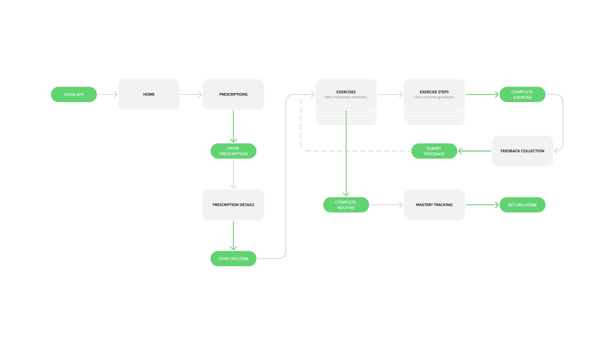

APT was my final project for my Extended Reality Technologies course at USC. Throughout the span of 5 weeks, my team and I built an at home physical therapy experience in the Apple Vision Pro. I self taught myself how to develop using Polyspatial SDK through reverse engineering Unity starter scenes and constant iteration. Home rehabilitation today is confusing, isolating, and rarely provides the real-time feedback patients need to progress; patients are also slow to recover.

This exercise is meant to count shoulder circle repetitions and measure arm ROM. One of the more difficult areas of making this was having to estimate the shoulder position. Vision Pro doesn't have a shoulder joint so I estimated the position of the shoulder based off both hand and camera position.
This exercise is another shoulder exercise that exercises shoulder mobility from different angles. In three rounds more repetitions are required of the user to progress to the next round.